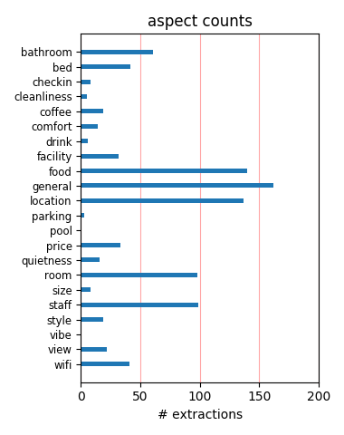
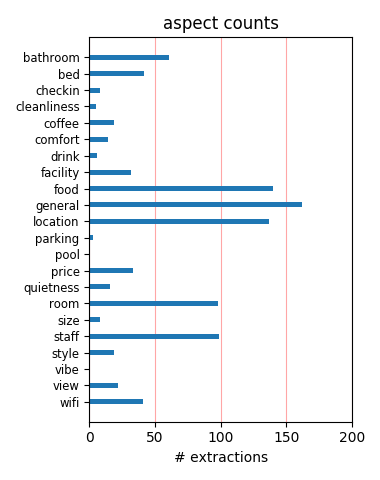

My husband and i stayed at the una hotel in rome in oct 2011 first time in rome, great place ! It is very modern, great breakfast and staff VERY nice, i would recommend this hotel to anyone staying in Rome. Close to train station about 5 mins walk . would stay here again
Completely baffled by other reviews,the staff here have been the rudest most unhelpful that I have encountered in 9 countries. They charge 3 euros for empty wine glasses to take to YOUR room! Are not interested in helping their guests or in their comfort. Rotten experience
the rooms were clean and though the hotel seemed fairly busy, the halls were quiet. though the front desk could use a concierge, the staff were friendly . great access to the metro and very walkable to many Rome sights. for the price, it was a good choice and I would reccomend it.
I stayed two night at this hotel but this hotel was really amazing. especially I liked their breakfast. there werent hot stuff but its totally enough. Ham,cheese, delisious bread, cookies, it was so good. I defenitely chose this hotel, if i go bak to rome again. breakfast, so good.
This hotel was wonderful. The location is perfect, as others have said. The rooms were clean and modern, and I found the staff very polite and helpful. The wifi and mini bar deal was really worth it. I loved everything about this hotel. It made my stay in Rome completely comfortable and convenient.
This new modern hotel was very nice. The room very clean and had a comfortable king sized bed. The bathroom had a large shower/tub and modern sink. The room was very quiet for a Roman hotel. Great inclusive breakfast buffet. The location is very close to the train station. We would stay here again.
Hotel is close to Termini, Bus Station & Metro. 15 minutes walk to Colesseum. Great room with air conditioning which is essential in Rome in the summer. Great choice for breakfast. Would stay in hotel again and only wished that we had stayed in UNA Hotel in Milan on the next stop on our visit of Italy.
The hotel is clean & the rooms are very spacious. Very near to the Roma Termini. The personnel at the front desk are all helpful, in particular Francesca. She was very friendly & a lovely smiling face in a city that smiles infrequently. The only negative is the cost of 25 Euros for a days internet access.
The hotel was new or newly remodeled, very 1st rate. Very secure electronic entrance to rooms, electronic controls for all lighting and A/C. Rooms extremely spacious especially for Hotels in the city. Excellent location near tour stops, rail station, main parts of city, etc. Hotel staff was very pleasent and helpful.
This Hotel is a gem, very different from other claimed 4 star hotels in the city. It is clean, modern, spacious, efficient, centrally located, offers excellent facilities (including a wonderful fine dining restaurant)...and yes good value for money (note it is not cheap, but the quality is excellent, hence it represents good value).
The hotel is one block away from Roma Termini. It is a new hotel with good, clean rooms and good breakfast. We easily walked down Via Cavour to the Colosseum in approximately 10-15 minutes. The Spanish Steps are also not far from the hotel and we also walked there in about 25 minutes. We stayed at the hotel twice and would definitely recommend it.
White, shiny, and sparkly is the way I would describe this hotel. It was the chosen hotel for Rome by our Insight Tour and I can see why. It was very comfy and definitely a 4 star. Looks like just a doorway from outside but wow when you enter and then enter your room...wow! Would definitely recommend it. Close walking distance to so much history too!
We booked this hotel on the basis of the reviews on trip advisor. It IS an excellent hotel situated as all the other reviews say minutes from the Termini. The hotel is clean, the staff are helpful - our Scottish accents were a wee bit too much for them at times :-) and the room was perfectly fine for the short time we spent in it. i would recommend this hotel to anyone in a heartbeat.
We stayed 3 nights and 2 days. The rooms were extremely clean and comfortable. Nice size for European hotel. Centrally located by Termini station. Breakfast was included. Internet is available at a fee. We were able to check in early the first day, they were very accomodating. We chose this hotel based on Trip Advisor and we were very happy with our choice. I would stay in this hotel again.
Recently back from a trip to the eternal city. Lovely architecture fantastic customer service and stunning rooms with high finish. Upgraded on arrival as it was my 30th. I Also went to Lake Como where i proposed to my gf on a private speedboat which I drove in the middle of lake como!! Easy to get there via Milan as near main términi station. Make sure you go for a higher floor to avoid metro.
The hotel is very nice, new and clean. The breakfast is quite good. The only problem we faced was tha problematic shower. The staff was very helpful. Be careful with room service because it costs a lot to get something in the room. also the location is not the best and we were a bit uncomfortable when returning late at night. on the whole though it has been a wonderful experience to stay there.
We booked in advance online and got a great deal with this hotel. I've stayed in many hotels in Rome that claim to be 4 star but usually they'd be lucky to even be a 3. This hotel is new and clean, it also is right next to the main train station and only a 15 minute walk to the Colosseum and other attractions. The breakfast was delicious. If i ever go back to Rome I will Definitely be staying here again!
Brand new hotel (opened spring 2010). Huge rooms with lots of amenities. Huge bathrooms. Silent rooms, excellent bed and good choise of pillows. High ceilings in both. Reminiscent of the 19th century Grand Terminal hotel's. Great location: 2 minutes walk to Termini train and bus stations to everywhere in Rome or Italy. Room with one extra bed (good one) for a child still have space to move around. Very good breakfast.
Hotel is so close to termini station and another places for visit. Firstly, this great hotel have a over expected standard rooms for staying. My girlfriend and I stayed 2 nights in this hotel and everything was perfect in a hygienic and comfort way. Breakfast service had a good croissant and cake selections. Our travel purpose based on traveling but I think this place is amazing and satisfy both business and travelers choice.
Stayed at this hotel for two nights. Arrival was perfect, good explantion of facilities and shown to room - brilliant! Room was immaculate and the bed simply huge. Bathroom was clean and highly functional. Breakfast was typically Italian - good and wholesome buffet with staff bringing drinks. The location of this hotel is ideal for a central stay and close to the main railway station and buses to the airport. All in all, oustanding.
Lovely, modern hotel located one block from Termini rail station. Professional, helpful staff. Stylish, clean rooms that are well-maintained. Breakfast buffet is a wonderful extra...so many choices. Front desk made some spot-on restaurant recommendations. For a slight splurge, hotel can arrange a private car for you.....not much more than a taxi. The neighborhood is in transition, but we always felt safe. You can't go wrong with this hotel.
We chose UNA because it was near (one block from northern end) Termini in Rome. We were a little nervous because we had read that most Termini hotels were seedy or in a dangerous area. UNA is SO new that of the 3 cabs we took, only one had heard of it and none knew where it was. It's BRAND spanking new and beautiful and you cannot beat the price. We complied with a great pre-paid (non refundable) promotion and it made our stay extremely reasonable.
Well located, nearby Termini central station, where we can easily have access to and from airport, trains, express buses to Rome main tourist venues and walk down the avenue towards coloseo. The rooms were very confortable and had high quality amenities. The breakfast was excellent and well managed, as there were many people in the room. The only con was the internet, which was paid. Anyway, we had a very nice experience in Una Roma and recommend it!
We spent three nights in this hotel. The staff can speak English well and loves to provide us useful information about Rome. There is one day that we met a strike. The nice staff suggested us to visit the colosseo by walk and showed us how to get there. It did save us a lot of time. Besides, the room space is enough for two adults with two big baggages. As for location, it is near the Rome termini so we can go the sightseeing spots easily by bus or by metro.
Just around the corner from the main station and surrounded by economical trattorias, this is a well located property. It is only quite new and the rooms are modern and clean the bathrooms are large and well appointed though the bedroom is very small, the queen bed took up most of the room, but it was great and excellent value for money. The public areas are very nice, the restaurant good and the staff very helpful and friendly. I will use this hotel again for sure
We stayed in this hotel for 3 nights in August 2011. We had a superior room with a balcony. The Room was spacious, well decorated and the bathroom was very nice. The hotel was easy to find and in a good location to explore Rome with many restaurants nearby and good travel links, although we ended up walking to most places. The hotel was very modern, clean and the staff helpful. The breakfast was great. I Would definitely recommend this hotel to anyone visiting Rome..
Stayed in April 2011. Location is very good, a short walk from central station. Walking to tourist sites might be a little far for some, but the metro is easily accessible from the station. Rooms are excellent. Very clean, very comfortable beds/pillows. Breakfast buffet is absolutely outstanding, one of the best I've seen. Delicious home-made pastries and just about everything else you could ever want. You won't need lunch :) No free wifi (or free internet at all) is the only negative.
I was so glad we picked this hotel, you are 3min away from the trams - trains- underground and the bus to the air port which costs 4EUR The hotel was very modern clean and comfortable, the only down side no tea making facilaty in the room. Staff were excellent,from the reception to the breakfast Reception staff were always helpfull with advice on how to get to differant part of Rome be it by bus - tram or metro I would be disapointed if we could not stay at this hotel the next time in Rome
We enjoyed our stay at the UNA Hotel Roma. Overall the service was excellent and the rooms were comfortable and modern. The A/C worked well during the day, but at night the hotel seemed to overide our settings and increase the temperature so that we woke up to a warm room. The breakfast was okay, nothing special but adequate. The location was very good as we were very near the train/subway terminal. The staff were courteous and helpful. We would certainly consider staying at the UNA again. - Igor
We stayed at the UNA Hotel Roma in May for 3 nights! It is a 2 minute walk to the Termini station which was quite nice as we had several large pieces of luggage! The hotel is very new and clean and the staff was always very helpful. The room was very spacious and had a nice large flat screen T.V. We enjoyed a large buffet spread every morning for breakfast! The hotel was about a 15 minute walk to the Colosseum and a little further from other sites. Only complaint would be the additional charge for Wi-Fi.
This hotel is only a block from the main railway station in Rome so within easy walking distance with luggage. It is also very close to the main Hop on Hop Off bus stop and is surrounded by many typical pavement restaurants. The staff were obliging and helpful. We were able to leave our suitcases there while we took a 5 day trip to Sorrento. On return we were upgraded to a suite which was very nice! The breakfasts which were included were excellent, but I think the the restaurant may have been quite expensive.
Agree with the positive points from the VintageCouple below. We were on the same deal a week later. We had a huge shower but no bath which I wasn't expecting. The sleep quality only gets a 3 because although the bed was great, workmen started digging the road up under the window at 6:45 each morning. This might be finished in a week, a month, I don't know. But I'd check first. Its located on the edge of a rough area, but don't let that put you off. I would stay there again if we went back and recommend it to anyone.
I loved this place! It's literally a block from Termini Rail Station, and we walked everywhere. The place is immaculate - from the rooms, service, and the delicious breakfast in the morning! If I go back to Rome, I will definitely stay here again. If you don't like being around tourists or crave a "local" experience, this is not the place for you (lots of fellow Americans here, but I don't mind one bit)! One downside is expensive internet. I had to send a couple work emails on this vacation and paid 3 Euros for 30 minutes!
The Una is located a couple of minutes walk from the Termini rail station, easy to find & in not too bad an area. The hotel is modern, clean and the staff are polite. We stayed in a standard room which was slightly small, but still very clean & had a good size & compfy bed. The breakfast buffet offered a wide choice of food and filled us up for a day of sightseeing. The metro line is under the rail station & the bus depot is outside so very handy for getting around easily. i.e. you can get anywhere within 15 minutes or so.
We really enjoyed this hotel. We were fortunate to get a top floor room with an outdoor balcony which made for great evenings. The hotel is close enough to the tourist attractions for exploring Rome and is ultra convenient near the train station and Metro stop. The staff made perfect recommendations for dinner each evening and even made our reservations. The staff was very helpful and the complimentary breakfast was good. My only negative would be that the mattresses were a bit uncomfortable but I am spoiled by my Beautyrest Pillowtop at home.
Very welcoming and efficient reception staff. Comfortable and well appointed room with contemporary furnishing. Restaurant staff efficient and very attentive and meals were reasonably priced. We ate here 2 out of 3 nights. Our only foray for an evening meal outside was disappointing. Minor issues; Roof terrace was closed. Bathroom ceiling showed water staining and could do with a repaint. Handy for transport if you want it, and centrally located for walking around the sights. If I was to return to Rome, I'd book the Hotel Una without hestitation
Great attention to detail, comfortable and thoughtfully laid out rooms, large well-appointed bathroom, fantastic breakfast, easy location - you just can't find fault with this hotel. The staff are so well-trained that it's a relief to check in here after some of the other places I stayed in Italy. If I ever go back to Rome, this is the only place I'd consider staying in. I can be quite harsh about hotels (see some of my other reviews!) but this place is fantastic! (And take advantage of the "free internet and minibar" deal - it's well worth it!)
We spend 4 nights in Una Hotel Rome this week. We were overall satisfied. The room was a small, but clean and comfortable. The only problem was the noise of the tram which was passing by the Hotel every 10-20 minutes, but it was not that bad.. The breakfast was excellent, the staff kind and helpful. What I did not like at all was the lack of free internet, still many hotels are requesting payment, and Una Rome is one of them. The next time I will choose another hotel with free internet access, for me it is as important as breakfast included. T.Gurkok
We were booked into the UNA by a travel agent who claimed she couldn't find another good hotel with four rooms. What a mistake. For starters, the employees were so cold and indifferent to our needs, we thought they were automotons. The hotel is antiseptically techy and yet has no voice mail, wake up calls that don't work and charges if you blink. One block away were many hotels at a third of the price that would have been a far better selection. We love the warm, friendly people of Rome but the UNA is the antithesis of that. You can do a lot better for a lot less.
I can't believe anybody has given this hotel less than top ratings. We were there for 3 days last week, and had a wonderful time. The staff were very courteous, helpful, and well informed (even when we arrived early, and were late for our check-out). The whole hotel is clean, modern and beautifully designed, the beds are very comfortable, the location ideal (for walking, taxi, bus, metro, or train), and the breakfast buffet was extensive (really didn't like the scrambled eggs though). We are well traveled, and quite discerning, but found this hotel completely to our liking.
This hotel was great. Very clean and modern and also a decent size. The bathrooms were gorgeous and the the bed was super comfortable as well. The hotel is 1 block away from the train station but was on a side street so it was quiet and you did not get the noise from the traffic and people from train station. Wifi is a bit pricey and you can only hook 1 computer to it at a time. The staff were friendly...although not as welcoming as most hotels i have stayed at but that could have been because of the language barrier. Overall a good stay. http://www.vitalvixen.com/blog/?p=186
Highly recommend this hotel. Great location. 15 mins from Coleseum though bit uphill on way back which can be bit tough for older travellers. 2 min from Rome Termini, with option to take trains to Florence etc Staff very friendly and helpful with directions/advise etc. The hotel is very clean. Limited vegetarian option for dinner (we got 15% discount for restauarnt) No hesitation recommending this hotel, I wonder if it's quite new as some taxi drivers didn't know it. Hopefully it will retain the competitive price (€150 per night for 2 people incl breakfast) and friendly manner.
We spent 4 nights at the UNA Hotel Roma. The hotel itself is modern and clean with nice amenities in the room. The staff was very helpful and friendly. The breakfast offered many selections to choose from. The location could not be beat- a 2 mintue walk from the Termini station. There were lots of restaurants in the neighborhood, but we chose to head to other areas of town for dinner and always walked back to the UNA. We did pay 3E for 30 minutes of wifi, but did not consider it an issue. We thought the UNA was an excellent value for the price and would stay there again any time in Rome!
I chose this hotel based on the photos found on the internet and I was not deceived, it looks just as beautiful in real life. It is newly renovated with a modern interior and gorgeous bathrooms.Everything in the room was new, and the cleanliness is impecable. The location is a decent/good one for rome, just across Termini station, it takes about 15-20 minutes by foot to get to Piaza d'Espagna, and about 3 minutes to get to the subway station. As a minus point I would say the breakfast could be better and maybe a spa/pool to better justify the price (the hotel doesn't come cheap compared to other 4 star hotels in Rome ).
Stayed 3 nights in the hotel. Got a free upgrade to a superior room with terrace- unfortunately it was too cold to go out! Room and toilet were adequate but no kettle. Staff busniess-like in their interactions. Do note that they strictly enforce check-out at 12noon- they will disable the room key cards at precisely that time! So inform early if you want a later check-out. The best thing about the hotel is there are about 5 halal eateries in the immediate surrounding area. I would advise to pack the food to go though, cos like in many countries, areas near the main train stations tend to be pretty dodgy especially at night.
The Una Hotel in Rome is very modern, clean and well run. A good location, five minutes walk from Rome's main railway station, 'Termini'. The Colosseum and Forum are only twenty minutes walk from the hotel. The modern rooms are comfortable and well appointed. The buffet breakfasts are very good with a great selection on offer. The staff are helpfull and friendly. The only minor niggle was the electronic control pad in the bedroom. Trying to adjust or being able to turn the air-con and lights on and off didn't seem to be an option. If you are looking for a modern hotel to stay in while visiting Rome the Una would be a good choice.
We stayed at this hotel for a couple of nights after a Rome cruise and were very pleased with the hotel, friendly and helpful staff, very close to Termini Station (1 Block away) and very clean and comfortable. Very modern rooms with flat screen TV and spacious shower- also, they had a great breakfast buffet. Only downside (and am being picky with this) is that they didn’t have a 110 V outlet in the room and did not have adapters so we could not charge any of our electronics before the flight. This was our first time in Europe so I don’t know if this is the standard for hotels there. Besides this, everything was great, would definitely recommend this hotel
- Downstairs bathroom is super clean, with modern design - We stayed in Superior Queen. It is definitely small. But clean. Modern. - Bed was comfortable - Bathroom was modern and clean - Shower doesn't totally close. - Temperature is controlled from the front desk. - When getting off Termini, from the Airport, you just cross the street and it is a short block away - Hotel's name is sideways, hard to find at first - Little away from the city center, but the convenience of the tram makes up for it, all metros stop here, so you can go anywhere quick - Breakfast is great, hot and cold breakfast. If not included in your hotel, I don't think it's worth it, though.
Stayed at this hotel for three nights (21/3/11 - 233/11) - great location, really lovely rooms, free buffet breakfast, upgraded to superior room on check in which was nice. Could not fault the hotel or the service. Go to the nearby Termini station pay 42 euros for hop on hop off bus which included 'beat the queue' at the Vatican - well worth it. Trevi Fountain, Spanish Steps, Colosseum etc all within 10 - 20 minute walking distance, bus ride to the Vatican, they stop regularly. Had evening meal in hotel on one night with 15% discount voucher each, so that helped the cost of the bill, would definitely stay there again, clean, comfortable, rooms, had a great time
We stayed for 3 nights - this is one of the best city hotels we have stayed in. The staff here are friendly and happy. Rooms are ultra modern. Flat screen TV, Giant comfy bed, Huge bath....and spotlessly clean. The location is ideal for seeing all the sights. A minutes walk to the Termini where you can catch the Metro to all the major sights. We walked to most places, 20 mins to the Colloseum and we even walked all the way to Vatican City! The breakfast was great. There is a wide choice. Cereals, pastries, toast with jams, fruit. etc etc If you are looking for a hotel in Rome that is in a good location with great services, then look no further, this place is the one!!
WOW!! We loved it here. Out 5 night stay was in luxury - Gorgeous large room with a big comfortable bed and a luxurious bathroom, which was fantastic after a day of sightseeing beautiful Rome. The location of this hotel is excellent only a block from the Termini train station and still close enough to walk to the sights. The staff was very helpful and friendly especially the breakfast and restaurant staff. We had dinner in the hotel restaurant 2 of the nights and found it exceptional and inexpensive. We will definitely return here one day in the future and highly recommend Una Hotel Roma to anyone visiting Rome. Thank you to all there that helped make our stay so memorable.
We had read that the area surrounding Termini station wasn't the best but we wanted to stay somewhere accessible to different transport and this place turned out to be perfect. We were even within walking distance to the collosseum so that was a bonus!! Included in the rate was breakfast which was quite simple but I really enjoyed the fresh bread rolls in the mornings. We didn't eat in the restaurant, just had coffees and light meals. There are several decent restaurants that are really close by. The staff were quite friendly and very helpful with questions about sites and restaurants. Overall it was a great place for my husband and I to stay at and we would definitely recommend it.
The hotel is modern and attractive. Reception and all staff were friendly and helpful. Breakfast to International standards and evening restaurant quite adequate Our superior room was a Junior Suite and very comfortable. Location was good and the little restaurant on the corner nearby was very good. Easy Termini access is a bonus for Venice bound travellers. We were unfortunately "skinned on the spot" by management who took advantage of our one day out in six to charge us a higher rate for the last two nights ,this in spite of our changing the booking by email several weeks prior.. they had suddenly, mysteriously, "lost" their reservation change reply when we arrived ..caveat emptor
Stayed at the UNA hotel in Rome for 9 days and just loved it. Room was a little small compared to NA standards but bed was extremely comfortable and there was lots of closet space. Bathroom was large. Very clean. Loved the wood flooring (hate carpet in hotels!). Beautiful design. Buffet breakfast was included and it was very good. Staff were very friendly and helpful. Never hesitated to help us and they were never rude compared to a lot of restaurants around Rome. Situed in central Rome - everything is within walking distance. Quiet for downtown. Tram passes closeby but it just makes a soft roaring sound - like a plane overhead. After a few days, you don't hear it anymore. Would strongly recommend this hotel.
I stayed here over a year ago but just realised I did not review it. I booked based on recommendations from TA. Could not have asked for more. We were given a free upgraded to a superior room on arrival and could not believe the quality of the room. Great decor, very fresh and modern and much larger than any other room we have had in Rome. Lovely hotel, friendly staff and the breakfast is great. It is a 2 min walk from Termini but still easily accessible to all the main sites (10-15 min walk). We liked it that much we are staying here for our wedding in Rome in a few months. It offers reasonable value when compared to hotels of similar standards in Rome. It would be good to have tea making facilities in room though.
The hotel was 2 short blocks from the main train station in Rome. We were only there for a day, and we took the train from the airport and then the next day to Civitavecchia. The hotel was new and modern. The front desk crew were all very helpful with directions and recommendations. Our room was small, but well appointed and the shower was fabulous after a long plane ride! The breakfast was also wonderful, with fresh fruits and pastries and a terrific cheese selection. Internet wasn't free, but the hourly rate was quite low. The hotel was the perfect choice for a traveler who wants to be near the train station. We booked our room through the hotel web site and got a very fair rate of 125 Euro at the heart of the summer season.
I stayed here in October 2010 and must say that this hotel was excellent. It is right by Termini station which is ideal for the airport. We chose the wrong exit from the station so use the main one, near the bus station bit and then you will be OK (the hotel was UNA on the side so you will see it clearly). The room was ideal with an excellent bathroom, it was very clean and the staff were very helpful. The food at breakfast was ideal and just what you wanted before a busy day siteseeing. The hotel is ideally placed, with buses and the metro at Termini. The tram line passes the hotel so could be noisy if you were near that but we got used to it and was OK for us. Don't think there was a better hotel for us honestly, loved it here.
When we came to the hotel, we had for the first 2 days a room with a shower that was molded. We asked to change the room and we got one that was really great. Breakfast was really great and we loved it. The personal in the breakfast-restaurant was nice and the coffe was great. Just one of the leading-receptionists was not so friendly. She said me that I can go to the Internet-Caffe if I dont like the internet in the hotel. And that for the price of 6 EUR for every DEVICE and HOUR. I had to pay 12 EUR for every hour if I would like to use my PC and my iPhone in the hotel. And 18EUR per hour if my daughter would like to use her iPad. Imagine that I booked German Internet over 3G because it was cheaper.. Thats not the european standard.
We took the train in from Florence and this Hotel was very conveniently located. It was close enough to the train station that it was only a 5 minute walk to the hotel. The hotel is modern and very nice. The room is a on the smaller side, but there is enough space and lighting so we didn't feel cramped. The worse part of the room is the shower. It's basically a 2' x 2' area with a shower curtain around it. The area is a little bit lower than the rest for the water to drain. The problem is that if the curtain isn't just right, you basically flood the entire bathroom! It really is a poorly designed shower, On the bright side, the water pressure is great! The free breakfast in the morning is a really nice way to start the day off in beautiful Roma!
We stayed 7th to 12th March in a Superior room on a travel zoo special offer. The hotel is very conveniently placed near the Termini. The rooms are very modern with excellent beds and bathrooms. The buffet breakfast included in the deal was very good with plenty of choice. The waiting staff very helpful and service very efficient. Unfortunately the weather was not very good but the room was very warm, computerised heating system which we never seemed to work out. Only drawback was no hospitality tray. We ate locally as the weather was not conducive for walking far. On the Via Principe Amedo we enjoyed meals at Elletra /Aquila Nera./ Tudini Gabriele and Tomoko. Penty of choice and fresh ingredients. The staff were very helpful and spoke good english.
Having been working in Rome for a while, my colleagues and I have stayed at several hotels near Termini - and the Una is by far the best. Modern, stylish rooms, good high pressure showers, flat-screen TV, but most imortantly of all - really comfortable beds and quiet rooms. Many hotels that we've stayed at in the area suffer massively from noise from the streets - but the rooms at the Una are really well soundproofed. We usually pay €125 / night B&B, and this compares really well to other hotels in the area. 20 mins walk to Colosseo or the Trevi Fountain, and you are literally 2 minutes from Termini for trains (including the Fiumicino service) and the metro. Highly recommended for both business travellers and people wanting a base for their Rome trip.
We just came back from Rome on the 1st of December 2009. We stayed 4 nights at Una Hotel Roma. It is a new, very nice hotel, very nicely decorated. It is very close to Termini Station and walking distance to many historical sites. Colosseo is 10-15 minutes walk. People working at the reception helped us a lot, they were very friendly. Breakfast was good, the bed was comfortable. If you want to stay right in the heart of attractions, you need to stay at an older or more expensive hotel but if you don't mind walking a little, then Una Hotel is the right place to stay. If you have limited days, take a sightseeing tour of Rome. If you have time, definitely go to Pompeii to see the archeological site, visit Mount Vesuvius and Positano is a must to see......
We are from NYC n loved it ...this is a really nice modern hotel ..... The staff was very nice a helpful all of them down to the cleaning lady was nice ..... the check in was easy .... They give you a booklet of things to do while your there a map so you know were things are which was helpful all most everything is close to the hotel and if its not its 2 are 3 stops on the train.the most....my room was really nice it was 3 of was my 1 friend payed a guest fee cause she didn't book with us but the put in a bed for her....we stayed 7 days n not 1 thing was bad they helped Us look for clubs even called some of them for me 1 night hotel foodwas good ...I would stay in this hotel and tell others to also .......we had a blast in Italy Rome in the u n a .... Stay here ...
The staff were excellent, they do not have tea/coffee making facilities in the rooms but my aunt asked could she have it and they brought one up no problem. The room wasn't very big but we werent in it that much so was fine. The bathroom was lovely. The heating in the room was very high and was hard to work. The location was excellent, Termini station was right around the corner and the metro system was great. You can also walk everywhere here, we walked to Trevi Fountain, which on the map was at the opposite end but only took 25 minutes but was nice weather. The breakfast was excellent, buffet style with a wide variety. The restaurant also served food but it was expensive. This hotel was expensive but we got a good deal on a comparison website and that is why we chose it.
After spending 2 weeks renting an apartment in Rome ,we decided to stay at a hotel for the last night. Hotel was excellent, friendly service and the room was very clean. It's right by termini station which is very convention for travelers but for sightseeing around the vatican, spanish and pantheon it might be a longer walk than desirable. I have to say, I will never forget the sleep I had the night at this hotel. The bed was so comfortable I did not want to get out in the morning and after two weeks sharing a small bed it was wonderful to finally sleep comfortably again. The staff was also very helpful, we ended up having to arrive 3 hours earlier than our 1pm check in but they stored our luggage away safely for us and checked us in so we could get some lunch and explore the area.
Booked two double rooms for a three night break with friends.Requested two non smoking rooms and one of them had a ash tray in.Both Rooms were superior. No tea/coffee making facilities in these rooms and considering the price we were very disapointed. I requested a tea tray but this could not be provided. Rooms were very hot and stuffy. No information in rooms regarding tv or in fact any thing !. Beds huge and comfy and nice complimentary toilitries. Priced for room service and in restaurant very high. Staff not very efficent or friendly. Breakfast staff failed to clear your table and very sloww with tea/coffee. Large selection of items for breakfast but hot items very poor especially the egg. You also have to pay an extra tax on checking out of 3 euros per person per night. This hotel was not worth the money.
After extensive seaching to find the right hotel for our first visit to rome we found UNA Hotel, reasonably priced for Rome and just what we loved, modern, clean, comfortable and very helpful. We could not have asked for a better hotel!!! Located just around the corner from the train station where most of the buses drop off and pick up from the airport, and gives you easy access to the metro for all your site seeing! (the metro is soooo easy to use to get around rome quickly!), not to mention is centrally located for all of the major tourist attractions, most things being in walking distance of around 20 mins! If its your first visit to rome and you're worried about finding the right place the definately book UNA hotel, brilliant nights sleep, great breakfast that will keep you going all day and fantastic and helpful service. Made our trip!
I stayed there one night and I wish I could have stayed a week. I went on a cruise and when I returned, I stayed at a more central Rome hotel. There was no comparison to the Una and I paid $80 a night more at the other hotel. I wish I had booked the Una for the return stay. There was 6 of us staying in 3 rooms and we all agreed that the Una was a the nicer of the two. Anyone planning a trip to Rome would be well served to look at the Una as a great place to spend your vacation dollars. The staff was very friendly and the service was excellent. I work for a major airline and fly to Europe all the time and this hotel is an amazing hotel for the price. . If and when I go back to Rome, I will stay at the Una. Plus, dont miss their breakfast that is included in the price of the room. It is a full breakfast and it is delicious.. Dont overlook this hotel.
I am happy to report that UNA Roma Hotel worked out great my travel needs mid-October 2011. My wife and I took the train from FCO to the Termini station and walked about 2 blocks to the hotel. We arrived at about 09:00 and our room was not quite ready, but we were able to check our bags with an attentive young man. The front desk attendants where very responsive and eager to help. I was extremely impressed with the hotel's modern look and feel. Doors, elevators, lighting in rooms, closets, bathrooms and shower - even the thick glass soundproof windows that could open with a built-in sunshade to keep light out if we wanted to sleep in. There was even a speaker for the television in the bathroom with its own volume control. The breakfast buffet was huge and such a great way to start the day. I wish there were better English langauge television stations though.
Room was clean, bed was comfortable. I would definitely give more than 3 stars, if our room was not looking at interior side. hotel is a rectangular shape, so some rooms are looking inside this rectangular. so there is no light or view for those rooms, and always dark. We didn't have any idea how is the weather just before leaving the room. So you must be sure your room is looking at street. Forum is 20-25 minutes away from hotel, by walking, but tourist info and church of Gesu is on your way. We have visited Gesu for every time passing in front of it. It was fantastic. so walking to center was not a problem. Also even at night, walking to hotel is so safe. But this hotel is just next to the train station. I didn't feel secure when I pass to the other side (north) of the station. but to center was at the south of hotel. so no need to walk around the train station at nights.
We've stayed in UNA Hotel for 5 nights, with our 2 years old child, in May. Loved the hotel for many reasons: The hotel is new, clean and very very well furnished in modern style. Rooms are large enough (for Rome standards), comfy, have wooden floors (no dirty carpets), gives the feeling of a 5-star hotel, and in-line with the price. The staff is excellent and very helpful. The breakfast is really nice, has many options, and sufficient. The location of the hotel is good, quiet and has no safety or security concerns. All historic sites are within the walking range, but I recommend bringing your child's stroller. We didn't use the public transportation, but the main terminal for trains (Termini Station), city-tour buses and subway are only 100m away. Don't forget to ask for a private car for going back to the airport, as it costs less than the taxis, and much more comfortable.
The position of the hotel is simply brilliant. Only one block away from Termini yet spared all the noise and crowds normally associated with Train Stations. I stayed there for 3 days in February and was very happy with the services that the hotel offers. During breakfast the service was brisk and efficient. The choice of pastries and cakes offered is amazing and the trays with cheeses and meats are replenished constantly. i particularly liked the offer of cappuccino instead of boring coffee with milk. Rooms are spacious and spotlessly clean. I did not like the idea of having to pay for internet connection in the hotel. If I wanted to have connection for 3 days of my stay I would need to fork out €75. Needless to say I feel that in a hotel which claims to attract business clients this is outrage. The management should correct this issue. Other than that I absolutely enjoyed my stay in Una
All in all the hotel was a good value for money. It is new and is decorated with taste. Our bathroom was large and had shower. Some rooms in the hotel have bathtub. The breakfast was good as in all Una hotels. Personnel serving breakfast was clearly stressed and a bit grumpy. Location of the hotel is a matter of liking - if you are spending only some nights in Roma and is going to continue your trip by train or plane the location is convenient. The subway and buses are 5 minutes walking distance. The forum and other interesting places are 20 minutes walking along via Cavour. There are lots of touristic restaurants and fast food around, so you never go to bed hungry. We've not managed to find decent night clubs/bars around the hotel. Drawbacks: no free internet in the lobby, receptionists could be more welcoming and smiling. The area looks suspicious in the evenings due to vicinity of the Termini. Soundproofing could be better.
This is a nice hotel with spacious (especially for Europe) rooms and a varied and extensive breakfast. The location is convenient to the train station but the area is otherwise charmless. This would have been a five star review had it not been for issues with housekeeping. After our first night we left the hotel at around 10 AM and were gone for about five hours, with the "please clean" sign up, but when we returned, no one had come in. We opted to go without service that night. The second day we again left out the sign, as well as a small tip for the housekeeper with a thank-you note. When we returned the room was still uncleaned but the tip was gone and the thank you note was crumpled in the overflowing trash can. When we complained at the desk they were unconcerned, simply offering to send someone up to clean the room. I found this to be an unsettling experience and will make us decide to stay elsewhere when we return to Rome.
We stayed at the Una for four nights in August. Two on our own and two as a part of a tour. Hotel is recently refurbished and is all done out in white marble style. Very nice and most spacious. The room however, was anything but. It did have a very high ceiling which was nice. Unfortunately, the room was possibly higher than it was wide or deep. Okay, putting the room size gripe to one side, the rainfall shower was lovely, there was also a separate shower head, but no bath. The location of the hotel, near the main railway station was great for us being only 10 minutes walk or so from the Trevi Fountain, Colosseum, Pantheon and Piazza Navona. Another nice touch at the Una is that breakfast is included, and the coffee was excellent. We also had a 'French Balcony' that looked nicely over the street and restaurant behind the hotel. In summary, a good hotel, good location, good breakfast, good room but very small and not cheap, but then, Rome isn't cheap.
Stayed at this hotel for a few nights. Was generally satisfied with everything except for food quality. I had a fairly spacious room (as I understand most of the rooms are less spacious, but I got lucky). The place is very clean, with very nice design. You don't get disturbed by the chambermaids. Their conference facility is fairly spacious as well. They don't allow any drinks (except for water) in the conference room though. This is rather unusual. The Restaurant: Pastas and deserts are fairly good! Main courses are tasteless and disappointing. Breakfast was also a disappointment for me. If you are into pastry in the morning then this hotel is the perfect place for you! They offer a generous variety of pastry (pies, croissants etc.) Apart from that, there is a choice of: omlet, boiled eggs, bacon and sausages, some cold cuts of supermarket quality. The good part was an assortment of fruit and yoghurt. I expected much better from a hotel of this type.
We ended our romantic holiday in Rome, and decided to take a chance on UNA as it was close to the station. Overall, I was happy, but there were a couple things that bugged me. Firstly, the aircon that didn't work because it was not yet Summer was a little ridiculous. It was super hot, and I couldn't sleep very well. Mercifully it was turned on, somewhat, the next night, as I think enough people must have complained. The other thing was that there was no separate concierge desk, so there were always queues at the reception, and for one of the biggest tourist cities in the world, this hotel was not equipped to help the hordes of tourists. When I asked the gentleman at reception if he could help me book for certain attractions (Vatican and Colosseum), he told me to look online and book it myself. I feel like they are missing a trick as I would have paid for some help with bookings and recommendations. Breakfast was fab, as was room service and the location.
The location is good,a block away from the Termini (to arrive and leave to the airport by bus), the room was more than ok, loved it, but unfortunately the front desk lady was super rude when I arrived after traveling for many hours... her attitude was far from helpful didn't even lend me a light adaptor to charge my phone (could not buy one either, t was 11 pm), I asked for a map she rudely answered she had non, no one helped (not even offered) with my luggage, and when I accidentaly "almost" got into the wrong elevator this man histerically yelled at me for doing so... I was appalled and did not feel welcome at all,plus I was traveling alone to Rome since I was going to meet my friends the next day... the next day staff at the restaurant showed more manners. I traveled to six other countries after Rome, and not once did I get such a rude welcome and lack of attention from hotel personnel, as I did in UNA Hotel, and to be honest it is a shame because the building is very nice.
I sayed at the Una hotel on business and had a mixed experience. On the plus side, the room was spacious and the bed comfortable. The bathroom was large with a big walk-in shower (no bath) and a big, illuminated mirror. There are plugs for hairdryer etc in the bathroom. On the down side, no conditioner, just shampoo, aircon that turns itself back on after you turn it off (very noisy fan), patchy phone signal (I found the best spot to be outside the gents loos in the foyer, nothing in my room), chargeable internet access (daylight robbery) and room service breakfast that didn't arrive. The situation is very close to the railway station indeed, and you have to walk along some narrrow, grubby streets to get to the shopping area. There are no decent bars close by and it's quite a walk to get a decent coffee. No coffee facilities in the room, no iron, stupidly expensive mini bar (3.50 euro for a small bottle of water). I wouldn't choose to stay here again, the phone signal issue is just too irritating.
We had a lovely experience at Una Hotel Roma. Although the hotel is expensive, it offers 5 stars accommodation. It is placed right next to the Railway station, very convenient for getting a bus to the main attractions of Rome. We even walked to the Column of Traian. It was a nice walk of around 20 minutes. Rooms are well isolated, no funny smell in the bathrooms like in the old hotels of Rome, all new furniture, minibar, and lights in the closet. Good bed and shower. We paid for a normal room, but we received really big rooms, with balconies. We had lots of toiletries, and it was really relaxing at the end of a full day in Rome to come back to this nice hotel. Didn't like the ladies at breakfast's entrance. They were very rude to us, and kept on talking in Italian to us, although we told them that we do not understand, and to speak in English. Breakfast saloon is small and crowded. Not to much choice of food either, but really good coffee. Overall, we would come back to this hotel, if we were to visit Rome again.
We stayed here in two sets (5 nights when we first arrived in Italy, then 1 night on the way home) and unlike some other reviewers found the location to be very good. Easy walking access to most sights and close to Termini for those who like to catch the metro. We found the rooms to be clean and modern. On the negatives, we found the staff at the reception to be unfriendly and unhelpful. They weren't very impressive when we asked some basic questions like where to go shopping, places to eat etc. When we left our first stay to book for our final night a month later, they booked it under a different name. Very unprofessional as we were checking out at the same time, so no idea how they got that wrong. Luckily when we came back to check in, I had the confirmation slip and my credit card receipt so we weren't stranded without a room. Breakfast which is included in the rate is average at best. Limited hot food and fruit. Lots of varieties of pastries although the quality is not very good. Good location, but I probably wouldn't stay here again.
This was our first trip to rome,a mini break straight after our wedding to put us on till our actual honeymoon in jan,an wow what a break.We arrived at the hotel late at night after a full day of travelling,we were great at the desk,an was very happy to recieve a free upgrade to a suite,after been shown to our room,we were just blown away,it was gorgeous,a brilliant size with everything we could want an more.we had breakfast there every morning an it was fantastic,had drinks in the bar on a night (during the happy hour) an got lots of great nibbles with them (which were not your standard peanuts an crisps i`m happy to say) we ate out every night just because we wanted to experiance the local restaurants.I would HIGHLY RECOMMEND THIS HOTEL IF YOU HAVE NEVER BEEN TO ROME BEFORE,its in an ideal place,2 min walk to the termini,20 min walk to the colosseum,had an amazing time an this hotel was the icing on the cake,really made our holiday going back after a long day to such a fantastic,well thought out hotel.I`m 29 an my husband is 45 an we would recommend this hotel to anyone, any age.
Chose this hotel for a 2 day break in Rome with my husband and 2 friends. I chose Hotel Una based on other reports on the Hotel and was not disappointed. The location is great, close to the station and metro and about 15 mins walk to the Collosseum. There is a good choice of restaurants in the vicinity if you are too tired to venture far from the hotel after a day of sight-seeing. The staff were very friendly and helpful, giving us a map and advise on how to get around and recommending good eating areas on arrival. The room is excellent and we were fortunate enough to be upgarded to a superior room and our friends to a suite. The shower was great, especially after a long hot day of walking the city. The bed was very comfortable and we had 2 great nights sleep, with no disturbance from traffic noise often encountered in large cities. Rome is beautiful and the main tourist attractions are easily covered in 2 days, but if you want to really explore, stay longer. If we ever return to Rome, which if our wish when throwing coins in the Trevi Fountain ensures we will, we will definitely stay at the Una Hotal.
After much deliberation I finally settled on this new hotel near Termini Rail station in Central Rome. The hotel is nicely decorated throughout with Italian marble floors in the lobby and wooden floors in the bedrooms. Beds were very comfortable and although we had a nice balcony that came with booking superior accommodation ,due to the rain we were not able to use it and consequently the room felt quite small. Bathroom is spacious with a glass walled walk in shower - peculiarily there is no mirror in the bedroom. Nice flat screen TV also with about 40 channels but only one in English BBC World. While I liked the rooms I did not sleep very well as the AC switched off in the middle of the night making it very uncomfortable - seemily this is a requirement in Rome at this time of the year overnight ! Breakfast was very busy self service style each morning and the choice was adequate. Overall I liked the hotel and the staff for Rome were genearlly helpful although the area that it is situated in is rather seedy but compensated for by the concentration of the transportation network in this area making it easy to get anywhere else.
A very stylish room with a huge bed, modern furniture and fittings. Toiletries supplied were all vegetable based thus avoiding any allergies. Room was spotless! Only problem was that it was difficult to get into such a deep bath to use the shower as ther was no handrail and the showerscreen was in the way. Reception staff were very efficient, pleasant and helpful. Arrived early but were very pleasantly surprised to be allowed into our room. We were lucky to have a room overlooking the inner courtyard but I do think there could have been some noise from trams if we had a room on outer edge of hotel. Convenient location near bus and train stations and had no trouble walking to our hotel on arrival. Disappointed to find that there was no outdoor space even although photos had shown sunloungers on a roof terrace.Lots of tourist restaurants in area but take care as some were poor quality or overpriced. Check menu before ordering even a drink! Main roads into city centre close but traffic horrendous! I've never experienced zebra crossings like this before. Had great holiday,7 days, feet sore,pockets empty but enjoyed it thoroughly.
I wish I’d noted that so many of the previous reviews had given high ratings for the hotel location but really low for customer service. This was also my experience. To be fair the hotel has some good points – good location (if you want to be near Terminii) and excellent soundproofing. The breakfast was extensive, although the coffee was truly shocking for Italy. Where it is let down is the service and the infrastructure. No internet access for some of our stay, and no hot water which when you’ve been travelling all day and really need a shower is not great. And sounds like it happens quite often, which may explain the attitude of the staff – it’s not our fault and we aren’t going to do anything about it or apologise for the inconvenience. And at €250 a night this really isn’t acceptable. I guess with so many one-time visitors they don’t feel the need to be helpful as they know you aren’t going to return. Well my advice is stay away from this hotel until they get their customer service sorted. PS if you do decide to stay here despite the reviews, use the special offer on TripAdvisor for free internet access, otherwise it is around €25 per 24 hours.
Stay at the Hotel UNA ROMA for two night on a quick stop in Rome while on Vacation. This is a nice hotel but in a very urban area. Check-in was fast and efficient and the staff was friendly and professional. Like most places in Rome, the staff was about getting you checked in and to your room.. If you are looking for warm and fuzzy, you need to stay in a resort. The room was nice, I received an upgrade to an executive KING. The bathroom was clean with the exception of the shower area. As mentioned in previous reviews, the venting the bathroom is poor and causing the drywall in the shower area to crack and paint chip. But as I mentioned before, it's urban Rome and not a resort and for what you pay here, the room is reasonable. This is a new property and I am sure that the drywall is being addressed. I did not get to eat at the restaurant or take advantage of the free breakfast. There are restaurants in the area (Go out the front door of the hotel, take a left, and walk about 4 blocks) and they were quite good and very reasonable. I booked online and was surprised that when I arrived that booking granted me FREE internet for my stay. Overall I was very happy at the hotel UNA. (Remember... It's not a resort)
Overall, I was very pleased with this hotel. We stayed in a few hotels in this area, and this one was the best given the price. Location: Just a block or so away from Termini station. No cab needed. Less than a few minutes walk away. We were able to walk to every other point of interest (Colosseum10 mins away, Trevi Fountain was 15 mins away, etc.) except for Vatican City, which was a short metro ride away. We did take cabs to certain restaurants for dinner just because we didn't feel as comfortable walking around at night. If you don't want to venture out at night, plenty of decent restaurant options nearby (Alessio and La Matriciana are a couple) Room: We got a classic double room. King sized bed, VERY nice bathroom with the usual amenities. Water pressure great.. towels were big. Beds were not the most plush I've slept in, but so much better than a lot of other European hotel beds you'll encounter. Nice bedding and pillows. Mattress on the firm side. Wifi in the room is available, but at a charge. I believe 22 euro a day. Breakfast: Probably the best I had in the few hotels we stayed at. Really nice dining area, friendly staff and great pastries + the usual fare: eggs, meats, cheeses, breads, yogurt, fruit, etc.
Una Hotel Roma is located minutes from the Central Station (Termini Roma), where you arrive by the Leonardo express train from Fiumicino Airport, or by any other means of public transportation for that matter. It's a few steps away from the corner of Via Cavour which will take you all the way down to the Colosseo (doable on foot). The hotel is decorated in a contemporary style that's both classic elegance and modern convenience. We stayed on the 6th floor and had superior rooms with terraces, which would've been put to greater use had it not been November.The rooms are good size, nicely furnished in warm tones of cream, beige and soft browns. Breakfast (included in the price) was a bonus. It offered pretty good selection of cold cuts, cheeses, eggs, fresh fruit, pastry, dairy, etc. The service at breakfast was fantastic when Bernadetta was on duty. The day she was off, things deteriorated quickly. The dishes kept mounting on our table, with noone paying attention. One thing, I did not like was lack of free WiFi (it was available at 6 EUR/hr) which one tends to excpect at this sort of a hotel nowadays. Other than that, UNA Hotel turned out to be a super choice for our short stay in Rome. I'd definitely recommend it.
Stayed 3 nights in the Una hotel, which is conveniently located near to the main train station in Rome. The hotel has only been opened for less than a year which means that the place is spotless, very clean. The room we stayed in was a superior room which was bigger than the usual small rooms on offer in hotels in Rome. The bed was massive and very comfortable. The ensuite bathroom had a big bath and a very good overhead shower, no problem for a 6' 4" giant. Breakfast was a buffet style where you helped yourself to the food. Almost anything you wanted was here, the only thing you couldn't get was a traditional english fry-up. The waiters at breakfast were excellent, very attentative, we ordered tea, coffee & hot chocolate (what pigs!) all in the same sitting. Nothing was too much trouble, The bar & restaurant are very expensive, even for Rome, and the choices didn't seem that extensive or appealing. There is a lot of road works going on around the hotel, so it can be quite noisy. Also, where our room was located (425) there is a lively restaurant across the road which can be a bit nosiy at night, but not too bad. All in all I would highly recommend Una hotel, especially if you can get a good deal on their rather high normal room rates,
Choose UNA Hotel upon recommendation and rating on Tripadvisor, and was not disappointed! The location is perfect, close to Termini station (Metro and train) and ideal for street cafes, trattorias etc. The only slight downside is that it is on the edge of a not so nice area, but I didn't feel threatened nor put off. Received a warm, welcome reception, and tips on the best way to travel. Our room was clean and tidy (stayed in a classic room). Bed very comfortable...asked for extra pillows, they were on our bed when we returned that night. Breakfast was served at a decent time...and for you sleepy heads... until 10.30am, plenty to choose from and service was first class. We didn't eat in the hotel on an evening, too expensive, instead went to local restaurants around the corner, eat outside and watched the world go back. Be warned: you get pestered by people trying to sell tacky gifts and the lucky lucky watch man. Be firm and say no! They eventually get the message. This is my first trip to Rome and my partner's third time, and even he said the location and hotel was just perfect. We were happy with our choice and were sad to leave after 3 days. The whole experience of Rome and its history was breathtaking.... my little flippers (feet) took a bit of a battering with the many miles!! I would not hesitate in recommending this hotel to family and friends.
When I was researching our trip to Rome, I wanted to pick a hotel that was both nice and really convenient to all the sites. The Una was both. We took the train from Fiumicino Airport and when we arrived, the hotel was less than a 10 minute walk (the train from the airport arrives on a track on the opposite end of the train station). We were immediately given our room (arrived around 2pm) and were really happen with it. The room and the bathroom was really nice (a great rainhead shower). Nice toiletries, spacious wardrobes, comfortable beds. The room we stayed in was really quite and the blackout shades were amazing (we overslept they were so great!). The buffet breakfast was wonderful- the selection is great. Can't say enough about the location. Both metro lines stop at the train station (Termini) and even if you want to walk to all the sites, they are all within walking distance. We did a lot of both (we used Rick Steve's guide book and highly recommend it- some really great walking tours and invaluable sightseeing tips). A few of the reviews I read while i was researching the trip mentioned feeling unsafe in the neighborhood around the train station, I never felt unsafe and like any big city, it is always wise to be aware of your surroundings and be cautious. The staff were friendly and happy to help with directions. I would highly recommend this hotel (already have)....an overall wonderful experience.
Our stay was from March 31- April 3 2011. We arrived at the hotel early about 9am and our room was not ready, but we expected this. The hotel kept our luggage for us and we walked around the corner and toured the Basilica Maggiore. When we returned at about 10:30 our room was available. We stayed in a Superior room which had the tub/shower. The pictures online are accurate and the room size was adequate. The hotel was very clean. The bed was comfortable and you can request a feather pillow if needed. If you need to iron....bring one. The hotel staff, and especially the ones at the registration desk were extremely professional and pleasant. The hotel is close to everything. Now, for the tips...book your Vatican/St. Peter's tour with Presto Tours. Our tour guides name was Ryan and all I can say is Wow! He was great and extremely knowledgeable. Copy and paste the link to view his video. The tour was 108 euro for two and worth every euro. http://www.youtube.com/watch?v=g9S6941FMzU For FCO airport transportation to/from the hotel we use Rome Limo Rental. 50 euro each way. I made the reservation online and was sent an email with confirmatin within hours. The driver was waiting at the airport and waiting at the hotel for our return trip back to the airport. No problems at all. http://romelimorental.com/airport_transfer.html We found a great spot for lunch not far from the Trevi Fountain, Agrodolce on Via dei Crociferi, 25...
We stayed at the Una Roma for two nights in early October 2010. Having done our research, it seemed most of the hotels in Rome were old/traditional in style and as my husband & I prefer modern hotels, this place was ideal. Only opened last November, the hotel is modern, clean and crisp in style. The rooms are small but spotlessly clean, modern bathroom and the usual expected facilities. We were originally put in a tiny room with two twin beds pushed together but we asked to be moved to a double room (which was probably about a foot bigger) and the hotel staff were happy to move us. Location was OK - literally 2 mins walk from Termini (so convenient if taking the Leonardo Express from FCO airport, about 15 mins (slow) walk to the Colosseum but a little bit further to the other sights. Not horrendously far but it seemed that way at the end of a long day of sightseeing! I was concerned about the level of help/service we'd get from the hotel staff after reading reviews here but was pleasantly surprised. Maybe those who got a cold welcome arrived on a bad day! Breakfast was the same for the two days we were there - would have got tired of it by the third day! Most of the breakfast was tailored to a sweet tooth (pastries, tarts, lots of Nutella!) but there was also a selection of breads. The scrambled eggs looked radioactive though! All in all, a very pleasant stay at the Una Roma. If I return to Italy, I will definitely look up their hotels in other cities.
Easy to walk to from the main train station in Rome which also makes it very easy to get back to after spending all day sight seeing as many of the buses and metro trains go to the Termini (main station). The reception staff were very professional, efficient and helpful. When I was checking in the receptionist provided us with a clear street map and highlighted where to visit and how best to get there which was a great help. I asked for a quiet room and was put on the sixth floor in a room facing the inside and we heard nothing during our stay. The room was much larger than expected and very luxurious with a huge bed (two singles connected) TV, big bath etc... The breakfast was really good, with a very large selection, (cereals, fruits, yoghurt, cheese and salami, fresh rolls, pastries, cakes, juices, bacon, sausages and very yellow scrambled egg). The coffee was great and the staff very polite and efficient. The location of the hotel was great. We paid €25 each for a Roma Pass which gave us unlimited public transport, free entry to two museums (Colosseum and Roman Forum included) and then reduced prices to other attractions for three days. So we just hopped on the metro or buses to get around. I would recommend wearing comfortable shoes as there is so much walking. Another advantage of the Roma Pass was that you skipped pass the huge cues at the attractions, especially the Colosseum. We were recommended a local restaurant by the receptionist which was really great and just around the corner.
We booked the Una Hotel because we wanted somewhere central for sightseeing and of a high standard. We arrived at the hotel early expecting to have to wait for a room, but were pleasantly surprised to be told our room was ready and we were being upgraded to an Executive Room on the top floor. The room was spacious and had a lovely bathroom, although it was at the back of the hotel so had no view, but on the plus side it was very quiet, with no noise from the street or other guests. The breakfast was great, with a large selection available from the self-service buffet and there was lovely freshly made coffee which set us up for the day. Being a few minutes from the main Terminus, the hotel was ideal for our sightseeing and also just a 5 minute walk from where the airport shuttle bus drops/picks up, which was good value at 8 euros each. The reception staff were fantastic and helped with any questions on places to visit, location of restaurants etc. and the staff for breakfast cheery and helpful. Our only negative comments would be that they charge for wi-fi and that we were given no warning about the Protest that was to happen on the Saturday, which we had to cross through to get back to the hotel. Lots of roads in central Rome were closed off, so there was no transport if you wanted to get a taxi/bus back to the hotel. Being as it was such a large Protest, I think some kind of warning would have been helpful. We would definitely return to this hotel if we were in Rome again and will try other hotels within the Una Group.
Please read MLVReading's review below as I have to agree with almost everything he says. The service across the board was curt and unfriendly. For a high end hotel I have never in my life come across such poor service from front of house staff and I have stayed in a lot of hotels. The appearance of the hotel on the outside as well as the lobby and the room itself was very nice. The room was clean and modern but small (which is to be expected in Rome). It had all the mod cons you would expect in a higher end hotel. Wifi was ridiculously expensive. 6 euro for one hour or 10 euro for 2 hours. The service at breakfast was terrible. They don't have self serve coffee or tea so you have to ask for it. Every morning without fail we had to ask at least three times before we were served with coffee. Staff were curt and unfriendly. There are few hot food options and they were very average. Cold options were good, many pastries to choose from as well as cereal (but with UHT milk). There was no hotel service guide, so we were not sure exactly what facilities the hotel offered. I asked the hotel reception about this and they just told me they don't have a guide and I should ask them if theres something I am after specifically. The room had no iron, no tea or coffee making facilities. It had a reasonable view of the street, and was quiet but you could not open the windows at all. Compared to other hotels I have stayed at that are at the same level, this was the worst I have ever stayed at. Its no more than a 2-3 star hotel in 4/5star clothing.
Just returned from a 4 night stay at UNA Hotel! Arrived around 3pm to check in & was promptly upgraded from a superior room to a Executive room, which was a nice treat. Check in was very easy with the receptionist giving us a map of Rome & a quick run-through of all the 'must visit' sites which was very handy & helpful. The hotel is modern & we enjoyed the walk to our room. The hallways are a nice sight with the big bold room doors each illuminated from above by cleverly placed lights. Our room was clean & modern. large with a walk in area, large bedroom - Lounge area & a stylish bathroom with bidet & bath/shower. Clever lighting, especially in the bathroom. We loved coming back to our room after a long day tramping through Rome. The aircon was always handy & we never heard a peep from any of the surrounding rooms, which is always good. Buffet breakfast was ok. Not the best we had in Europe. I found myself reaching for the packaged cereal as I found the hot & cold selection not to my liking. We also missed breakfast a couple of days & tried a few of the local cafes. We too were worried about the location after reading of reports that the area surrounding was 'seedy'. But we found the area very handy to the metro. Termini is in the middle of the 2 metro lines a & b. So it was so handy when getting to all the sites. We also enjoyed the shopping & resturaunts within the termini station. They have market shops, clothes stores & dairies right outside the hotel. There are also a few Internet cafes in the area if you don't not to pay Hotel Unas steep wifi charges (around €6 euros for a hour All over, we had a pleasant stay at Hotel Una & would not hesitate staying again.
I've stayed at this hotel a couple times that I was passing through Rome. I love the location close to Termini (literally a block away) and I think is a great clean, well built new hotel. The room are ultra modern, the beds a great pleasure. This past stay was largely the same, except for a rather bad end to the visit. My complaints are otherwise very limited. First, the TV's 500 channels could afford to have one or two more English channels than CNN and BBC. They started me in an absolutely tiny room overlooking the block with a tram line, and all night the tram kept me up everytime it passed. The staff graciously found me a much more spacious inner room which was marvelously quiet. Even without having any sort of view, I was quite happy with the change. One complaint I have with this hotel is the bath/shower. There are no handholds, and you have to step WAY up and over the edge of the tub to get into to the rather slick surface to take a shower - still no handholds. They are a very serious accident (plus subsequent lawsuit) away from having new hotel owners, as getting around inside the tub is a very treacherous experience particularly getting out. I found the safest way to do it was slither out like a snake. My real disappointment came from the non-working phone system through which they were supposed to have given me a wakeup call. No ringing phone, I slept happily two hours longer than I wanted resulting in a 50 euro cab ride to the airport rather than a much cheaper train ride. When I asked the manager to help with the cab fare, she shrugged and said "no, we can't do that". Very disappointing. Would I stay there again? Probably. Although I certainly won't rely on them for a wakeup call.
Booked with Una corporate to stay in three of their properties (Florence, Rome, Venice) while touring Italy with my wife and 18 year old son. Got a nice discount. However when I checked in at the Rome property I was given a very small room which with my son's roll away bed was simply impossible. Returned to the desk and was told nothing could be done went back to the room and tried to rearrange the furniture and it was still not going to work. Returned to front desk and told the rather cold and abrupt clerk that the room was unacceptable period--I was a corporate reservation and requested to speak to the manager on duty. This lady didn't speak English but took one look at the reservation and directed the supercilious desk clerk to put us in a nice two room suite which was great! Thank you very much. The biggest issue most people will have with the hotel is the location--about two blocks from the train station. Not a high rent neighborhood. In fact I watched a homeless guy sit in a doorway across the street for three days and nights. At the historic baths a few blocks away I saw the mobile health service van giving the homeless Heroin addicts their "treatments". However, I never felt uncomfortable walking the local streets even after dark and there are some reasonable eateries just around the corner. Being installed in a suite probably skews my review...there was some street noise at night and there is full time security personnel in the lobby to keep out the riff raff but I found it comfortable and convenient with a nice free breakfast. My wife didn't care for the location but even she felt the room was nice--especially with the three of us in it. I'd stay again--she says I should find a better located B&B sort of place.